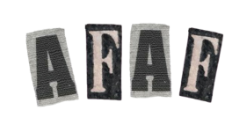

Information
Unmasking Manipulation: Fake news is a blatant lie, but manipulation can be more subtle...
Strategies
- Sharpen Your Critical Thinking: Don’t accept everything at face value...
- Cross-Check Your Sources: Don’t rely on just one source for information...
- Look for Established Names: Favor information from reputable news organizations...
- Check for Authorship: Identify the author and their credentials...
- Consider Funding Sources: Understand who is funding the information...
- If you are not sure, DON’T SHARE: This one is more so you help others out!
TOOLS FOR THE TRUTH
Here are some resources to check facts, fake pics / videos...
- Google Reverse Image Search: This free tool lets you upload an image...
- TinEye: Similar to Google Reverse Image Search...
- InVID WeVerify: This browser extension from the AFP helps analyze videos...
- Sensity AI: This is a more advanced tool used by professionals...
FAKE FACT CHECKERS
- Snopes: A well-established website dedicated to debunking myths...
- PolitiFact: This fact-checking site focuses on verifying the accuracy...
- FactCheck.org: This non-profit organization fact-checks claims...
- International Fact-Checking Network: This website provides a directory...